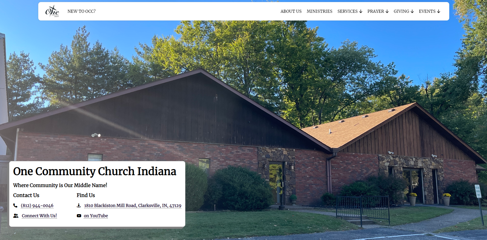
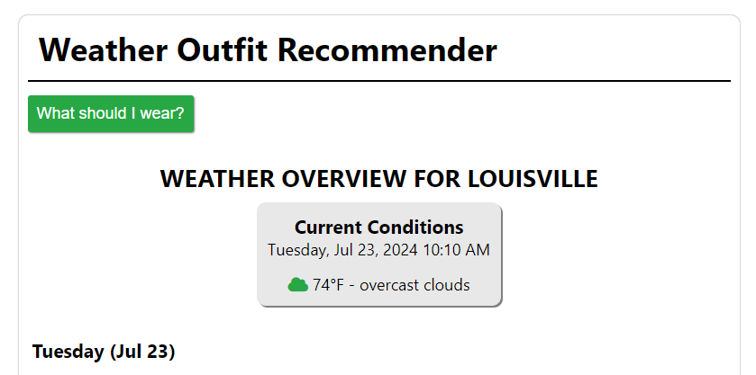
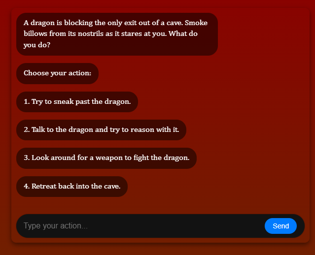

Alexander Hamilton by Ron Chernow | Book Review
August 21, 2024
I'm a husband, father, Jesus follower, and I have just recently graduated with a Bachelor's of Science in Computer Science at SNHU.
Hello! I'm a passionate web developer with a diverse set of skills and interests. Currently, I’m working on various exciting projects that focus on web development.
I have a Bachelor's of Science in Computer Science at SNHU, and I've dedicated much of my time to applying my academic knowledge to practical applications. As I transition to new roles at work, I aim to prepare my successor with the knowledge I've acquired, complete outstanding tasks, and document processes thoroughly. My goal is to continuously learn and train for new roles, ensuring I stay ahead in the ever-evolving tech landscape.
I’m 27 years old, happily married to my wonderful wife who is 28, and we have a delightful 4-year-old son and a now 8-month-old daughter. Balancing family life with my professional and personal interests is something I take pride in. I'm not always the best father, or husband, but I am constantly trying to improve myself.
Looking ahead, I aim to deepen my knowledge of JavaScript, design a blog layout that resonates with my vision, and explore new ways to integrate technology into everyday solutions. I am also passionate about using my skills to make a positive impact and help others in the tech community.
Provide technical support to end-users, resolving hardware, software, and network issues. Perform quality assurance testing on software applications to ensure they meet company standards and user requirements. Collaborate with development teams to identify, document, and track bugs, ensuring timely resolutions. Conduct training sessions for staff on new technologies and best practices for IT operations.
Managed print and client service operations, overseeing the production and delivery of high-quality print products. Implemented training programs to improve team skills and product knowledge. Analyzed sales data to develop strategies for increasing revenue and improving customer satisfaction.
Assisted customers in finding and purchasing the right vehicle to meet their needs. Demonstrated in-depth knowledge of automotive products and services to provide exceptional customer service. Negotiated sales terms and conditions, ensuring customer satisfaction and achieving sales targets. Managed customer relationships and followed up on post-sale services to maintain long-term loyalty.
Supervised sales and customer service teams, driving performance and ensuring excellent customer experiences. Implemented training programs to improve team skills and product knowledge. Analyzed sales data to develop strategies for increasing revenue and improving customer satisfaction.
Provided exceptional customer service in a fast-paced environment. Assisted customers with orders, ensuring accuracy and efficiency. Resolved customer complaints and inquiries promptly and professionally. Maintained cleanliness and organization in the dining area, contributing to a positive dining experience for guests.

Welcome to One Community Church! Our mission is to connect people to Christ and each other, fostering a vibrant and welcoming environment where individuals and families can grow in their faith. Located in the heart of our community, we strive to offer dynamic worship experiences, meaningful relationships, and opportunities to make a positive impact both locally and globally!
Task-Man is a streamlined to-do list application designed to help you manage your tasks efficiently. With Task-Man, you can easily add new tasks and organize them as either to-do or completed items. Marking tasks as completed moves them to a dedicated section, helping you keep track of your progress. You can click on tasks to view more details in a modal, providing an expanded view for better readability and management. Task-Man also supports persistent storage by saving your tasks to cookies, ensuring they remain until you decide to delete them.

Welcome to Fashion-Man! Fashion-Man is your ultimate companion for staying stylish regardless of the weather. Our app provides personalized wardrobe suggestions based on the latest weather forecasts, ensuring you're always dressed appropriately and confidently. Whether it's a sunny day, a rainy afternoon, or a chilly evening, Fashion-Man helps you choose the perfect outfit so you can look and feel your best.
It's time to test your knowledge of Bible Trivia! Characters, Books of the Bible, Places, and so much more! Bible Games is your place for fast, fun, and exciting Bible Trivia Games!

Dive into a dynamic Dungeons & Dragons adventure with our text-based web app. Enjoy a modern interface, randomized prompts, and interactive storytelling where every choice shapes your journey. Simple controls and endless possibilities make for an engaging, immersive experience.
In my time of creating this website, I started writing blogs and book reviews. I love reading and I've recently been enjoying writing. Below are some of my favorite blogs, reviews, and my best content!